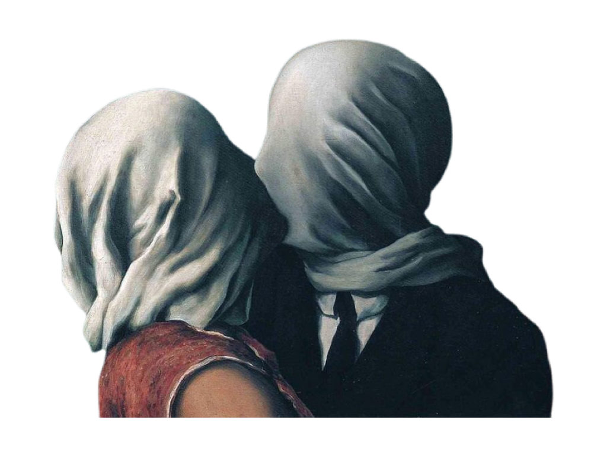

Surrealism aimed to revolutionise human experience, rejecting a rational vision of life in favour of one that asserted the value of the unconscious and dreams

The Lovers II, 1928
A barrier of fabric prevents the intimate embrace between two lovers, transforming an act of passion into one of isolation and frustration